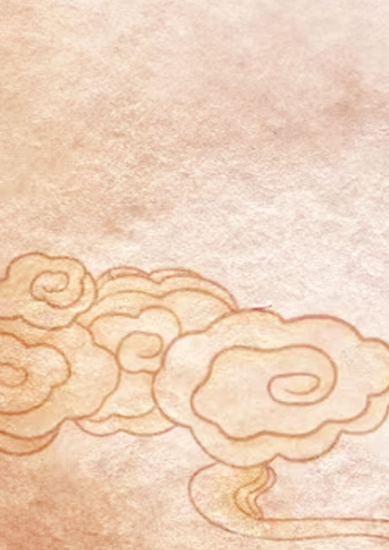

1、对偶、比喻：
将月下大漠比作白雪，将明月比作严霜，生动而形象地写出了大漠的荒寒和月色的凄冷，烘托了人物悲凉的心情，为下文思乡做铺垫。
2、情景交融：
诗的前两句通过写如雪的大漠和如霜的月色，交代了环境的凄清与寒苦，为下两句写戍边将士思乡做铺垫。

3、象征:
“芦管”这一乐器也象征着征人的思乡之情。
4、烘托、渲染：
诗人通过对大漠、月色和笛声的描写，烘托出了征人内心的孤独和思乡之情。同时，通过渲染一种凄凉的氛围，也增强了诗歌的感染力。
将月下大漠比作白雪，将明月比作严霜，生动而形象地写出了大漠的荒寒和月色的凄冷，烘托了人物悲凉的心情，为下文思乡做铺垫。
诗的前两句通过写如雪的大漠和如霜的月色，交代了环境的凄清与寒苦，为下两句写戍边将士思乡做铺垫。
“芦管”这一乐器也象征着征人的思乡之情。
诗人通过对大漠、月色和笛声的描写，烘托出了征人内心的孤独和思乡之情。同时，通过渲染一种凄凉的氛围，也增强了诗歌的感染力。